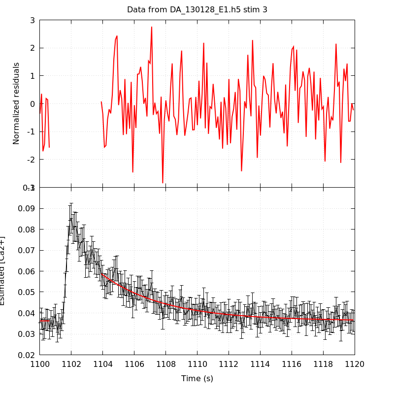
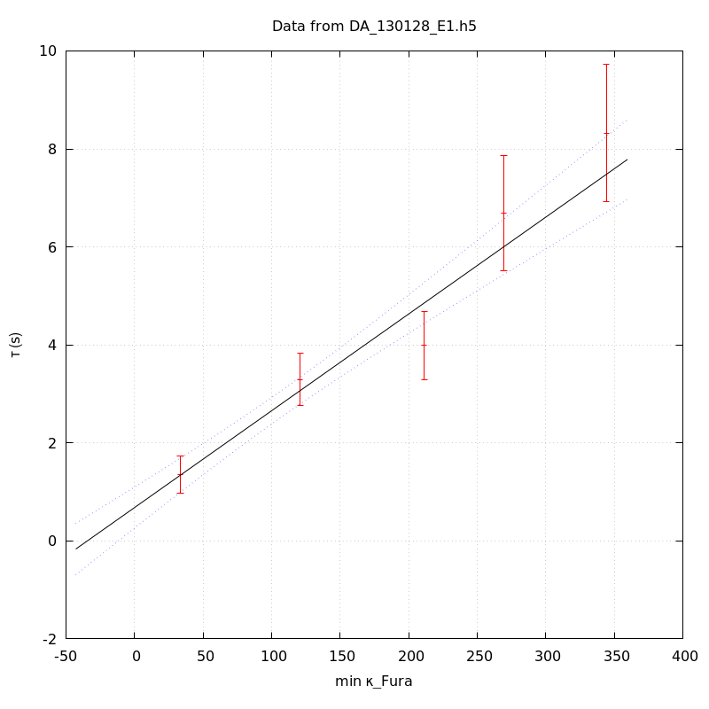
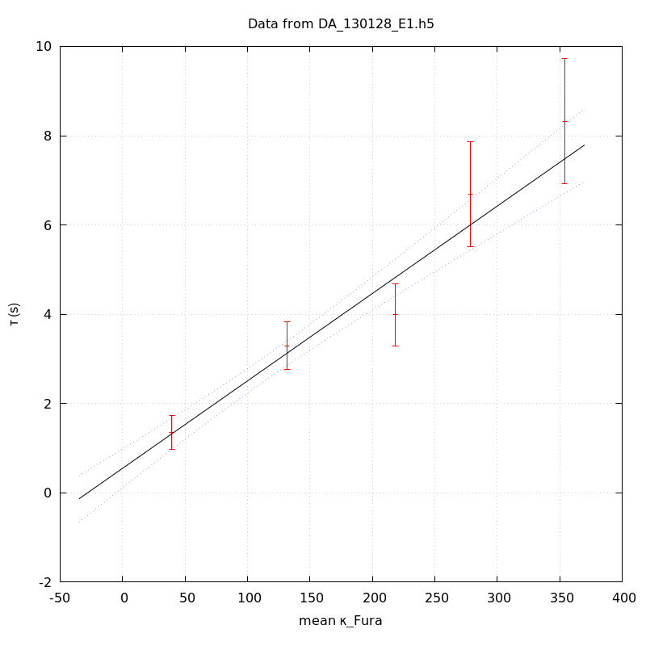

The baseline length is: 7.
When fitting tau against kappa_Fura only the transients for which the fit RSS and the lag 1 auto-correlation of the residuals were small enough, giving an overall probability of false negative of 0.02, were kept (see the numerical summary associated with each transient).
The good transients are: 1, 2, 3, 4, 5.
The time at which the 'good' transients were recorded appear in red.
On each graph, the residuals appear on top. Under the null hypothesis, if the monoexponential fit is correct they should be centered on 0 and have a SD close to 1 (not exactly 1 since parameters were obtained through the fitting procedure form the data.
The estimated [Ca2+] appears on the second row. The estimate is show in black together with pointwise 95% confidence intervals. The fitted curve appears in red. The whole transient is not fitted, only a portion of it is: a portion of the baseline made of 7 points and the decay phase starting at the time where the Delta[Ca2+] has reached 50% of its peak value.
The time appearing on the abscissa is the time from the beginning of the experiment.
Transient 1 is 'good'.

nobs = 185
number of degrees of freedom = 182
baseline length = 7
fit started from point 22
estimated baseline 0.0528621 and standard error 0.000905524
estimated delta 0.0772703 and standard error 0.00867
estimated tau 1.35364 and standard error 0.192373
residual sum of squares: 171.825
RSS per degree of freedom: 0.944096
Probability of observing a larger of equal RSS per DOF under the null hypothesis: 0.694431
Lag 1 residuals auto-correlation: 0.033
Pr[Lag 1 auto-corr. > 0.033] = 0.306
Transient 2 is 'good'.

nobs = 177
number of degrees of freedom = 174
baseline length = 7
fit started from point 30
estimated baseline 0.0420977 and standard error 0.00051857
estimated delta 0.0346766 and standard error 0.00155551
estimated tau 3.29466 and standard error 0.274881
residual sum of squares: 182.239
RSS per degree of freedom: 1.04735
Probability of observing a larger of equal RSS per DOF under the null hypothesis: 0.319014
Lag 1 residuals auto-correlation: 0.019
Pr[Lag 1 auto-corr. > 0.019] = 0.354
Transient 3 is 'good'.

nobs = 168
number of degrees of freedom = 165
baseline length = 7
fit started from point 39
estimated baseline 0.0362997 and standard error 0.000449918
estimated delta 0.0224485 and standard error 0.000905034
estimated tau 3.98821 and standard error 0.35594
residual sum of squares: 181.995
RSS per degree of freedom: 1.103
Probability of observing a larger of equal RSS per DOF under the null hypothesis: 0.173197
Lag 1 residuals auto-correlation: 0.156
Pr[Lag 1 auto-corr. > 0.156] = 0.027
Transient 4 is 'good'.

nobs = 157
number of degrees of freedom = 154
baseline length = 7
fit started from point 50
estimated baseline 0.0341591 and standard error 0.000648853
estimated delta 0.0204927 and standard error 0.000731058
estimated tau 6.68807 and standard error 0.600155
residual sum of squares: 135.564
RSS per degree of freedom: 0.880283
Probability of observing a larger of equal RSS per DOF under the null hypothesis: 0.854799
Lag 1 residuals auto-correlation: -0.116
Pr[Lag 1 auto-corr. > -0.116] = 0.954
Transient 5 is 'good'.

nobs = 160
number of degrees of freedom = 157
baseline length = 7
fit started from point 47
estimated baseline 0.0390377 and standard error 0.000621145
estimated delta 0.0180354 and standard error 0.000663066
estimated tau 8.32472 and standard error 0.716199
residual sum of squares: 197.149
RSS per degree of freedom: 1.25573
Probability of observing a larger of equal RSS per DOF under the null hypothesis: 0.0164202
Lag 1 residuals auto-correlation: 0.089
Pr[Lag 1 auto-corr. > 0.089] = 0.153
Since the [Fura] changes during a transient (and it can change a lot during the early transients), the unique value to use as '[Fura]' is not obvious. We therefore perform 3 fits: one using the minimal value, one using the mean and one using the maximal value.
The observed tau (shown in red) are displayed with a 95% confidence interval that results from the fitting procedure and is therefore meaningful only if the fit is correct!
No serious attempt at quantifying the precision of [Fura] and therefore kappa_Fura has been made since the choice of which [Fura] to use has a larger effect and since the other dominating effect is often the certainty we can have that the saturating value (the [Fura] in the pipette) has been reached.
The straight line in black is the result of a weighted linear regression. The blue dotted lines correspond to the limits of pointwise 95% confidence intervals.

Best fit: tau = 0.68068 + 0.019753 kappa_Fura
Covariance matrix:
[ +4.56923e-02, -2.53198e-04
-2.53198e-04, +2.39394e-06 ]
Total sum of squares (TSS) = 172.337
chisq (Residual sum of squares, RSS) = 9.34948
Probability of observing a larger of equal RSS per DOF under the null hypothesis: 0.0249877
R squared (1-RSS/TSS) = 0.945749
Estimated gamma/v with standard error: 50.6251 +/- 3.96541
Estimates kappa_S with standard error (using error propagation): 33.4595 +/- 11.1531
kappa_S confidence intervals based on parametric bootstrap
0.95 CI for kappa_S: [10.6434,63.0427]
0.99 CI for kappa_S: [3.69988,74.1558]

Best fit: tau = 0.549789 + 0.0195745 kappa_Fura
Covariance matrix:
[ +4.90248e-02, -2.65498e-04
-2.65498e-04, +2.34089e-06 ]
Total sum of squares (TSS) = 172.337
chisq (Residual sum of squares, RSS) = 8.6555
Probability of observing a larger of equal RSS per DOF under the null hypothesis: 0.0342398
R squared (1-RSS/TSS) = 0.949776
Estimated gamma/v with standard error: 51.0869 +/- 3.99309
Estimates kappa_S with standard error (using error propagation): 27.087 +/- 11.5225
kappa_S confidence intervals based on parametric bootstrap
0.95 CI for kappa_S: [4.14147,56.8259]
0.99 CI for kappa_S: [-1.47132,69.8052]

Best fit: tau = 0.442697 + 0.0194787 kappa_Fura
Covariance matrix:
[ +5.19686e-02, -2.76682e-04
-2.76682e-04, +2.31585e-06 ]
Total sum of squares (TSS) = 172.337
chisq (Residual sum of squares, RSS) = 8.50052
Probability of observing a larger of equal RSS per DOF under the null hypothesis: 0.0367244
R squared (1-RSS/TSS) = 0.950675
Estimated gamma/v with standard error: 51.338 +/- 4.01082
Estimates kappa_S with standard error (using error propagation): 21.7272 +/- 11.8373
kappa_S confidence intervals based on parametric bootstrap
0.95 CI for kappa_S: [-1.51938,50.4742]
0.99 CI for kappa_S: [-7.69217,61.8326]
5 out of 5 transients were kept.
sigma(tau): 0.192373, 0.274881, 0.35594, 0.600155, 0.716199
Residual correlation at lag 1: 0.033046612734191176, 0.019123075975603674, 0.15621807941849286, -0.11554265458423434, 0.08895863732849349
Probablity of a correlation at lag 1 smaller or equal than observed: 0.30600000000000005, 0.354, 0.027000000000000024, 0.954, 0.15300000000000002
RSS/DOF: 0.944096, 1.04735, 1.103, 0.880283, 1.25573